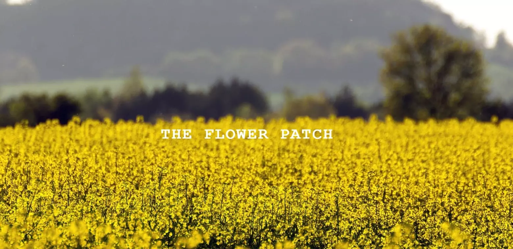
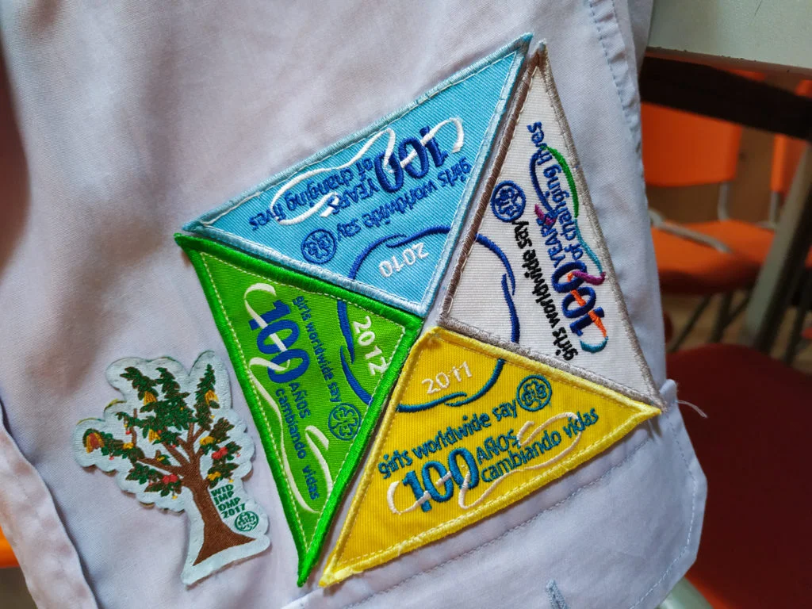

My Portfolio
About
My name is Jesús Sanz and I live in Spain. Currently, I work for Hiberus Technology as well as contributing to open source projects on the internet. Some of the technologies or frameworks with which I currently work are: Angular, React, Javascript, HTML5, SCSS, Bootstrap, Material, C# or PHP.
I love to practice sports such as snowboarding, ping pong, hiking or swimming. I collaborate with different non-profit associations and manage various projects to make my community a better place. When I still have some time left, I love watching movies, reading or playing video games.
Projects
Here is a list of my most recent projects as a front-end developer.


Contact Me
I put a contact form at your disposal. I am open to private and open source projects that encourage the improvement of my skills as a developer.